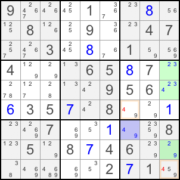

| Back to Course Catalog |
|
WXYZ-Wing |
|
WXYZ-Wing is a simplified case of ALS, and just a little harder to spot than XY-Wing. You are looking for bi-value cell and three cells which is an ALS. Let's look at the example:  The blue bi-value cell and the green ALS share the restrict common candidate 9. Between those two ALS's, candidate 4 exists at R7C7 and R5C9. R6C7 and R9C7 are visible to both cells. You can remove 4 from R6C7 and R9C9. To be exact, if R7C7 is 4, then R6C7 and R9C9 cannot be 4. If R7C7 is 9, that forces the green cells into a naked triple of 2, 3 and 4. in this case, R6C7 and R9C9 cannot be 4 either. You can remove 4 from those two cells. |
| Back to Course Catalog |